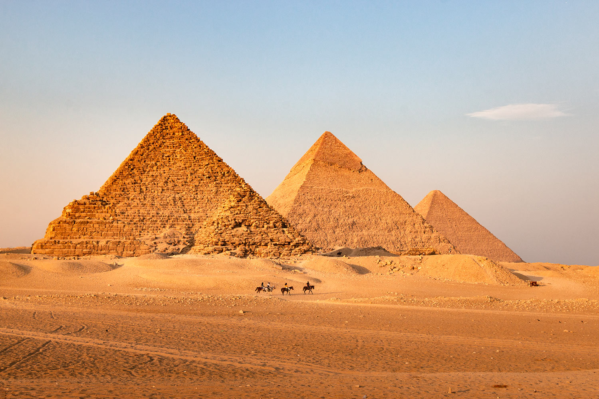
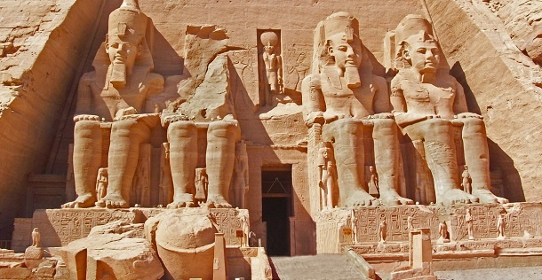
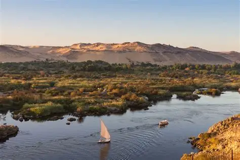

Pyramides de Gizeh

Les pyramides de Gizeh sont des monuments indispensables dans l'histoire de l'Égypte antique.
Elles ont été construites aux alentours de -2600 avant JC, elles ont été construites pour faire office de tombeaux pour les pharaons.
Si vous voulez visiter quelque chose d'authentique et de captivant venez visiter ces pyramides incroyables.
Vallée des rois

La cité des rois est connue pour contenir les tombeaux de beaucoup de pharaons, mais également leurs épouses et enfants dans certains cas.
Le tombeau le plus ancien présent dans la vallée des rois date du XVIᵉ siècle avant JC.
Je vous conseille d'y aller si vous adorez l'histoire et même sans s'y intéresser ça pourrait vous captiver fortement.
Le Nil

Le Nil est le fleuve le plus long du monde avec une longueur de plus de 6700Km, il est souvent comparé à l'Amazone qui est lui aussi très grand.
Le Nil est ce qui a grandement aidé les Égyptiens à grandir économiquement et également en termes de mécanique.
Une balade au bord du Nil est une expérience à vivre pour les paysages et les animaux observables.